Focus Fit · última atualização em 18 de setembro de 2026
Esta política explica, sem rodeio, o que o Focus Fit guarda sobre você, por que guarda e o que você pode fazer a respeito. Ela vale para o app e para o site.
O Focus Fit é operado por Arthur Volz. Para qualquer assunto desta política, incluindo pedido de exclusão de dados, fale pelo WhatsApp 41 98797-5115 ou pelo e-mail equipefocusfit@gmail.com.
Suas fotos de progresso não saem do seu aparelho. Elas são gravadas no armazenamento do próprio navegador e nunca são enviadas para o nosso servidor, para a nuvem ou para qualquer outra pessoa. Nós não temos acesso a elas e nunca vamos usá-las em anúncio, depoimento ou material de divulgação. Se você limpar os dados do navegador ou desinstalar o app, elas somem junto, e não temos como recuperar.
Só com quem é necessário para o app funcionar:
Nenhum deles recebe os seus dados para usar por conta própria, e nenhum recebe as suas fotos.
Enquanto a sua conta existir. As respostas do quiz de quem ainda não criou conta são apagadas automaticamente em até 30 dias. Quando você pede a exclusão, apagamos a sua conta e os dados ligados a ela em até 30 dias, salvo o que a lei obrigue a manter (registro fiscal da compra, por exemplo).
Pela LGPD (Lei 13.709/2018), você pode pedir a qualquer momento para ver, corrigir, levar embora ou apagar os seus dados, e pode retirar o seu consentimento. É só pedir pelo WhatsApp ou pelo e-mail acima, do endereço cadastrado na conta. Não cobramos nada por isso e respondemos em até 30 dias.
O acesso é por código enviado ao seu e-mail, sem senha para vazar. Os dados ficam em banco com regra de acesso por linha, o que significa que cada conta enxerga apenas os próprios dados. Nenhum sistema é infalível: se acontecer um incidente que possa te afetar, avisamos você e a ANPD.
O Focus Fit é para maiores de 18 anos. Não criamos conta para menores conscientemente. Se isso acontecer, apagamos assim que soubermos.
O Focus Fit é material educativo de apoio. Ele não é consulta, não fecha diagnóstico e não substitui acompanhamento médico ou nutricional. Resultados variam de pessoa para pessoa. Procure um profissional antes de mudar a sua alimentação ou começar a treinar, principalmente se você tiver alguma condição de saúde, estiver grávida ou usando medicação.
Se algo mudar, atualizamos a data lá em cima e avisamos dentro do app quando a mudança for relevante.